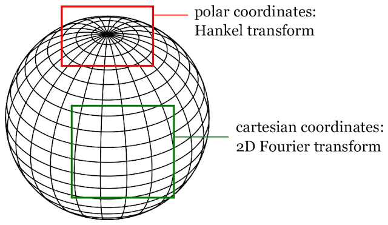

Spherical Harmonics are eigenfunctions of the Laplace-Beltrami Operator in spherical coordinates. As such they are similar to the Laplace-Beltrami eigenfunctions in Cartesian coordinates (sine/cosine), or Polar coordinates (Bessel functions). The spherical coordinate system can be asymptotically understood in terms of these two ‘flat’ coordinate systems. Correspondingly, the shape of the lateral part of the spherical harmonics (the associated Legendre functions) behaves like the ‘flat’ Eigenfunctions, as shown in the two Figures below:
